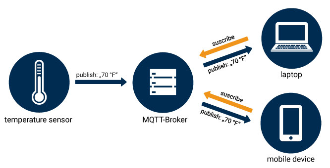
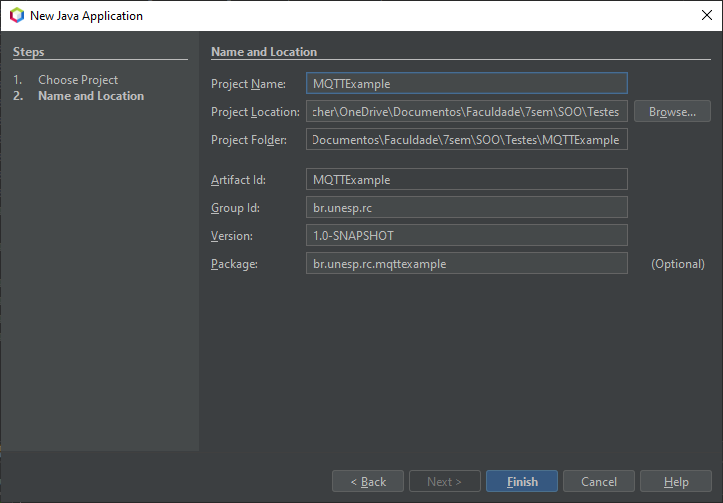
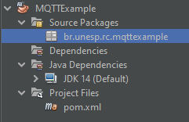

Transporte de mensagens com o protocolo MQTT usando a biblioteca Paho Java Client
GRUPO: 6
- Gustavo Ficher Catarino
- Leonardo Henry Giorgiani Nogueira
- Julia Outeiro Pinto
Pré-requisitos
Objetivo
O objetivo principal deste tutorial é apresentar uma alternativa ao HTTP para tramissões de mensagens envolvendo dispositivos IoT usando a biblioteca PahoMQTT para Java. Esta biblioteca usa o protocolo MQTT, que consiste em um modelo Publicador-Subscritor.
O que é MQTT?
O MQTT (Message Queuing Telemetry Transport) é um protocolo de mensagens baseado em TCP/IP para sensores e dispositivos móveis. O esquema de troca de mensagens é fundamentado no modelo Publicador-Subscritor, extremamente simples e leve. Os princípios arquitetônicos são minimizar o uso de banda de rede e uso de recursos dos equipamentos enquanto garantindo confiabilidade e algum nível de garantia de entrega. Estes princípios tornam esse protocolo ideal para as comunicações emergentes (M2M) “machine-to-machine” e para as aplicações “Internet of Things” (Internet das coisas) um mundo de equipamentos conectados, além das aplicações mobile onde banda e potência da bateria são relevantes. Atualmente se encontra na versão 5.0 e a 3.1.1 (padrão ISO), ambos são padrões OASIS.
O Paho Java Client é uma biblioteca cliente MQTT escrita em Java para o desenvolvimento de aplicativos que são executados na JVM ou em outras plataformas compatíveis com Java, como o Android.
O Paho Java Client fornece duas APIs: MqttAsyncClient fornece uma API totalmente assíncrona onde a conclusão das atividades é notificada por meio de retornos de chamada registrados. MqttClient é um wrapper síncrono em torno de MqttAsyncClient, onde as funções aparecem em sincronia com o aplicativo.
Como o MQTT funciona
Há alguns itens importantes para conhecer sobre o MQTT antes de usá-lo:
- Publicação e Inscrição
- Mensagens
- Tópicos
- Broker
Publicação e Inscrição
O primeiro conceito é o sistema de publicação e inscrição. Em um sistema de publicação e inscrição, um dispositivo pode publicar uma mensagem em um tópico ou pode ser inscrito em um tópico específico para receber mensagens
Por exemplo,
- o sensor de temperatura publica em um tópico
- o laptop e o celular estão inscritos neste tópico
- então, o broker envia a mensagem para o celular e o laptop
Mensagens
Mensagens são as informações que você deseja trocar entre seus dispositivos. Seja um comando ou dados. A mensagem também pode ser chamada de payload.
Tópicos
Os tópicos são um componente muito interessante do MQTT.
Ao enviar uma mensagem, você precisa decidir qual tópico deve enviá-la. Tópicos são representados por strings separados por barras ("/"). Cada barra em uma string denota um nível abaixo da hierarquia do tópico.

Podemos, também, utilizar caracteres coringas para increver em um tópico, mas nunca para publicar.
Coringa de Nível único: +

Coringa de Multi-nível: #
O caractere multi-nível deve sempre ser colocado por último na string

Broker
Por fim, você deve saber do termo "broker".
O broker é responsável por receber todas as mensagems, filtrá-las e decidir quais conexões deverão recebê-las.
Existem várias implementações de brokers MQTT. O broker mais comum em aplicações de automação residencial é o "Mosquitto". Alternativamente, pode-se usar um broker na nuvem ou um broker público. É importante notar que brokers públicos podem ser acessados por qualquer usuário, que pode publicar e increver nos tópicos que você está usando.
Criando o projeto
Vamos trabalhar neste tutorial com projeto Maven. Para isso, vá ao meu "File" -> "New Project".
Na janela que se abre, selecione a categoria "Maven" e, em seguida, "Java Application"
Preencha os campos conforme a figura abaixo e clique no botão "Finish".

Observe a estrutura do projeto criado na IDE:
 Observe agora o conteúdo do arquivo pom.xml do projeto
Vamos adicionar a dependência do PahoMQTT ao projeto:
1. Clique com o botão direito sobre a pasta Dependencies e depois em Add Dependency
2. No campo Query pesquise por mqttv3
3. Expanda org.eclipse.paho : org.eclipse.paho.client.mqttv3 e selecione a versão mais recente com o final [ jar ] - Eclipse Paho Repo
4. Clique em Add
Abaixo segue o pom.xml do projeto com as dependências:
Criando o exemplo
Vamos agora criar nosso exemplo...
Para isso, vamos utilizar um Broker público criado para fim de testes. Não é recomendado utilizar brokers públicos para projetos reais porque qualqer outro usuário pode ler e enviar mensagens.
Vamos criar uma classe Main.java no pacote br.unesp.rc.mqttexample e implementar um código que cria um cliente MQTT, se inscreve em um tópico e envia uma mensagem neste mesmo tópico.
O próximo passo agora é criar a implementação da classe MqttCallback. Essa classe é responsável por lidar com as mensagens recebidas.
Vamos criar uma classe MqttCallbackExample.java no pacote br.unesp.rc.mqttexample.
Observe o conteúdo da classe MqttCallbackExample.java:
Rodando o código
Para executar o código, basta clicar no botão Run Project (F6).
Observe a saída do programa.
O programa irá se inscrever no tópico "MQTT Examples", que é o tópico usado de exemplo na documentação oficial do Eclipse. Assim, você também receberá as mensagems do qualquer outra pessoa do mundo que está aprendendo a usar o MQTT neste servidor. Se o tópico estiver muito ocupado e, por isso, estiver dificultado os testes, você pode escolher qualquer outro tópico.
Depois de se inscrever, o programa manda uma mensagem "Unesp - SOO 2020" para este tópico. Note que, como estamos inscritos nele, também recebemos a mensagem de volta.
Apente Enter para encerrar o programa.
Perceba que, enquanto executei meus testes, outros usuários também estavam usando o mesmo tópico.
Bem, é isso! Até a próxima!